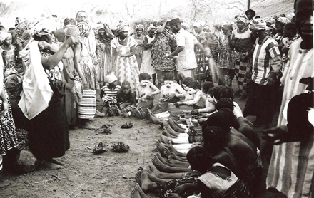

Introductory. Didactic and narrative religious poetry and the Islamic tradition; the Swahili tenzi. Hymns, prayers, and incantations: general survey; the Fante Methodist lyric. Mantic poetry: Sotho divining praises; odu Ifa (Yoruba).
There is a great variety of religious poetry in Africa. There are hymns, prayers, praises, possession songs, and oracular poetry, all with their varying conventions, content, and function in different cultures. They range from the simple one- or two-line songs of Senegalese women in spirit possession rituals1 or the mystical songs of Southern Rhodesia with their many nonsense words (Tracey 1929: 99). to the specialized hymns to West African deities or the elaborate corpus of Ifa oracular literature which is so striking a phenomenon among the Yoruba of Southern Nigeria. We should also take account of the prevalence in certain areas of the religious literature associated with the influence of the world religions in Africa. There is the Arabic-influenced poetry of the Swahili in East Africa and of Islamized peoples such as the Fulani or Hausa in the northern portions of West Africa; the ecclesiastical poetry, associated with the Coptic Church, of the dabteras of Ethiopia; and, from less ancient origins, hymns and lyrics arising from the recent impact of Christian missions in many parts of the continent.2 In these cases it is common for a written tradition of religious literature to coexist, and to some extent overlap, with an oral tradition.3
There are three main ways in which poetry can be regarded as being religious. Firstly, the content may be religious, as in verse about mythical actions of gods or direct religious instruction or invocation. Secondly, the poetry may be recited by those who are regarded as religious specialists. Thirdly, it may be performed on occasions which are generally agreed to be religious ones. These three criteria do not always coincide. Hymns, for example, may have definite religious content and be sung on religious occasions, but they may or may not be performed by religious experts; oracular poetry may be recited by priests (as in Yoruba divination) but neither the content nor the occasion be markedly religious; and didactic verse, like that of the Swahili, may have a theological content and be recited by specialists but not, it seems, be performed on particularly religious occasions. I do not want to propose any strict definition of religion here; the reader may exclude any examples that seem to him to be only marginally religious or include certain types of poetry such as ‘lyric’ or ‘dirges’ that have been treated in other chapters. However, I am not including here poetry that is religious only in the sense that it is performed on ‘ritual’ occasions such as the ceremonies to do with initiation,4 marriage, or death.5

Figure 13. Limba girls’ initiation: ‘Coming Out’. The young girls line up with whitened faces to show off their new singing and dancing skills; all spectators join in the choruses. Biriwa, Sierra Leone, 1961 (photo Ruth Finnegan).
Though didactic and narrative elements are sometimes found in a rudimentary form in the invocations and divination literature that will be discussed later, they do not typically appear in Africa as developed poetic forms. ‘Myths’ tend to appear in prose rather than verse6 and the songs embedded in them are not usually independent enough to count as narrative religious poems in themselves. Histories sometimes appear in verse with certain religious overtones—as, for instance, the Akan drum history quoted in Chapter 17—and praise and elegy for dead ancestors may in a sense be both religious and narrative; but the religious aspect does seem to be somewhat secondary in terms of content, occasion, and performer. The same is true for the poems associated with initiation and other rituals—when these are religious in content they are more concerned with invocation or praise than any explicitly didactic interest.
Islamic verse is the exception. In the areas where Arabic models have been influential through the tradition of Islam, religious poetry, often in written form, occurs with a pronounced homiletic and sometimes narrative emphasis. Such religious poetry occurs, for instance, among the Hausa and others in West Africa. Although written in the local language, it is often directly influenced by the Arabic models and contains many Arabic words and sentiments.7 These poems typically open with some such invocation as
In the name of God, the Compassionate, the Merciful; and may the peace of God be upon him after whom there is no prophet
and continue in a didactic fashion about, for example, the deceitfulness of this life, Heaven, Hell, pilgrimage to Mecca, exhortations to follow Mohammed, or prayers for divine assistance. This religious literature is a specialist form, often with named authors learned in Islam, and for its composition and propagation it relies primarily on the written word. Nevertheless, it is not totally divorced from the oral tradition, and there are instances of these religious poems being transmitted both orally and through writing; it is not always clear how they began. An example is ‘The song of Bagauda’. This is a long Hausa poem said to be of great antiquity which runs to over twenty pages in the Hausa text. It includes a prelude (doxology and eulogy of Mohammed), a list of Hausa kings, and a long homily on the frailty of this world, expressed in a form typical of Islamic tradition with eschatological material from the Koran and the conventional stock of images; it closes with rulings on points of Muslim law. The whole is set in a free form of a classical Arabic metre and rhyme system (qasida form, wafir metre and rhyme throughout in zva). In spite of its length and form, this primarily religious poem seems to have flourished in both oral and literate forms. Hiskett, its recent editor, was able to collect a text from an old Hausa woman and reports that it is also sung by beggars.8
The same sort of phenomenon appears in Swahili in East Africa. Here too there is a strong written tradition which includes religious poetry. It can be traced directly to Arabic models.9 This literary tradition goes back something like three hundred years and was a medium of expression which had its origin in the Muslim religion, although it was later used for secular verse. Both Islam and the Arabian models used for its expression may have had their origin outside the area: but the tradition came to be a national Swahili one, influenced and moulded by the genius of the Swahili language and culture. ‘Verse composition after the Arabian pattern involved the question of pride in Swahili origins; it revealed knowledge of Arabian life and of Islam, a sure guarantee for the highest prestige among the Swahili people’ (Harries 1962: 2).
There are many different types of Swahili verse, but they can roughly be divided into the shorter lyric forms and the much longer didactic or narrative poems called tenzi (sing. utenzi; northern dialect tendi/utendi). The first form is closely related to oral traditions and appears sometimes in written, sometimes in oral form: it is ‘not easy to classify definitely into “literary” and “popular” sections’ (Werner 1917–20: 119). The tenzi, however, depend much more on a written form; sometimes indeed they are said to be written as much for the eye as for the ear, and there seems to be less of an overlap between the written and oral forms of such Swahili poems than with the corresponding forms in Hausa. Nevertheless, though in the first instance the tenzi were written, they were designed for public performance; they were chanted aloud, sometimes by the composer himself, to musical accompaniment (Harries 1962: 24). And it seems clear that the existence of such a wide-spread and valued tradition must have had a profound effect on the whole Swahili literary tradition, oral as well as written.10
Swahili tenzi11 are long religious poems containing either homiletic material or a narrative treatment of the deeds of Muslim heroes, including the deeds of war. More recently other secular material has also been included, but the main emphasis is still strongly Islamic. The poems are marked by deep religious inspiration, and the conventional opening, whatever the subject, is a praise of God and his prophet. The narratives are based, more or less closely, on Arabian traditions; however, the models do not seem to have been followed exactly, and in the case of tenzi based on the general prose accounts of events relating to the Prophet, the poets were free to treat this material as they wished. To mention just a few, such narrative tenzi include accounts of the deeds of Job, Miqdad, or Joseph, a dispute between Moses and Mohammed as to which is the greater, the ‘epic of Heraclios’ depicting the legend of a Holy War against the Byzantine Christians, and a popular version of the death of the Prophet.
A typical example of the way in which a religious tone pervades the narrative can be seen in the Utendi wa Ras al- Ghuli, the story of Ras al-ghul. This deals with the adventures of the Prophet’s Companions when they were avenging a Muslim woman whose children had been killed by a pagan king. The events are set in Arabia and the poem opens in characteristic form with praise of God and a description of the copyist’s materials and methods. It continues:
Take down the beginning of the story / One day, we understand, / there appeared the Beloved / Our Prophet the Bringer of News.
At his coming forth, the Trusted One / went to the mosque / there inside the building / at the time of dawn.
After he had arrived / He called for Bilali / He called for him to call the people to prayer quickly / for the time had come.
And Bilali called them to prayer / sending out the cry / and the people heard / from the elders to the children.
And the Companions met together / all of them together / both Ali and Othman / as well as Shaikh Umar.
The leading Helpers / they were all present / with no one absent / and so Abu Bakr was there also.
When all had arrived / the Prophet came forward / to lead the people in prayer / with a high voice.
After they had prayed / giving thanks to the Glorious God / the Companions with Shaikh Ali / and the congregation of the Helpers.
They were inside the mosque / studying the holy books / when almost at once / they discerned a cloud of dust.
The Companions watched / and saw people coming / all riding camels / the number of them being ten.
They were coming in a hurry / and on arriving at the mosque / they proceeded to dismount / watering the camels.
And the leader of the party / a woman of distinction / giving greeting / and asking for the Prophet.
She spoke straightway / saying, Where is the Prophet / the Beloved of the Glorious God? / Show me without delay.
She said, Where is the Prophet / the beloved of the Beloved / our Prophet Muhammad / who sets at nought the infidels?
Show me the Exalted One / the Prophet of the Bountiful God / I have come an oppressed person / that I may give him my news (Harries 1962: 29–31)
The woman gives a long account of her suffering, then the miraculous events of the story are recounted, ending with the victory of the Prophet and his friends over the pagans.
Popular epics of this kind were intended for public performance. They ‘were meant to amuse and elevate the uneducated masses who liked to see their religious, social, and political ideals realized in the history of former times’, and ‘occasionally it is still possible to find a utendi being intoned in public on the veranda of a house. Public recital ensured that at least the gist of the story would reach the ears of the ordinary man’ (Harries 1962: 27, 24).
The shorter homiletic tenzi were intended for a more limited audience and were often directed at younger members of the community as instruction in religious and social behaviour. The most famous of these is the seventy-nine-line Inkishafi, ‘Revelation’, a poem composed in the early nineteenth century on the theme that all men must die, the glory of this world passes away, and we await judgement in the next world. The poet meditates on the transitoriness of life and the danger of eternal damnation, and looks into his own heart—for the title really implies the revealing or uncovering of his own heart and soul. Another well-known didactic poem is Utendi wa Mwana Kupona, a mother’s instructions to her daughter about her wifely duties. Even such household instructions are permeated with religious sentiments:
Attend to me my daughter / unworthy as I am of God’s award / Heed my last instructions / for it may be that you will apply yourself to them.
Sickness has seized upon me / and has now lasted a whole year / I have not had a chance to utter / a word of good advice to you.
Come forward and set yourself / with ink and paper / I have matters at heart / that I have longed to tell you.
Now that you are near / Write, In the Name of God / name of Him and the Beloved / together with his Companions.
When you have thus acknowledged / the Name of God the Mighty / then let us pray for His bounty / as God shall deem fit for us.
A son of Adam is nought / and the world is not ours / nor is there any man / who shall endure for ever.
My child, accept my advice / together with my blessing / God will protect you / that He may avert you from evil.
Take this amulet that I give you / fasten it carefully upon a cord / regard it as a precious thing / that you may cherish it with care.
Let me string for you a necklace / of pearls and red coral / let me adorn you as a beautiful woman / when it shines upon your neck.
For love let me give you a clasp / a beautiful one without flaw / wear it upon your neck / and you shall perceive benefits.
While you shall hold to my counsel / my child, you shall escape trouble / you shall pass through this world / and cross over to the next.
(Harries 1962: 73–5)
After this affectionate opening, the mother goes on to instruct her daughter as to her religious duties, her duties to her husband, household management, and kindness to the poor, followed by her own confession of faith as a Muslim. It concludes:
Read, all you women / so that you may understand / that you may bear no blame / in the presence of God the Highest.
Read, you who are sprouts of wheat / obey your menfolk / so that you may not be touched by the sorrows / of the after-life and of this.
She who obeys her husband / hers are honour and charm / wherever she shall go / her fame is published abroad.
She who composed this poem / is one lonely and sorrowful / and the greatest of her sins / Lord, Thou wilt her forgive.
(Harries 1962: 85–7)
In form the tenzi are modelled on Arabic poetry. Each line is divided into four parts (sometimes written as separate lines), of which the first three rhyme and the fourth acts as a terminal rhyme throughout the poem. This terminal rhyme is often a double vowel, and though these do not always rhyme to our ears (they may be -iya, -eya, -ua, -owa, etc.), added length can be given to both of the vowels in actual reading or recitation. There is a conventional dialect in which tenzi are written, but, unlike the involved syntax of lyrics, the narrative is expressed in a straightforward manner. The stock themes and form—in particular the opening prayers and invocations to God, the great emphasis on the frailty of this world, exhortations to religious duty, and the torment of the wicked—are strikingly similar to the corresponding Hausa ones from the other side of the continent.
This tenzi form has by no means lost its popularity in East Africa. It frequently appears in the vernacular press, now mainly written in the Roman as distinct from the traditional Arabic Swahili script. It is now also sometimes employed as a vehicle for Christian rather than Islamic doctrine, as in the utenzi reported by Knappert in which passages from the Gospel have been cast in the traditional epic style,12 or for political expression as in the utenzi about Nyerere’s life, recited in his presence following his inauguration as President in 1965.13 As has frequently been pointed out, this form of verse, with its conventional prosody and themes, ‘lends itself to indefinite longueurs’ (Werner 1928: 355) in the hands of a poetaster; but, treated by a master, it can result in magnificent epic poetry.
Though the extent and antiquity of the Swahili tradition of religious verse is probably unparalleled in subsaharan Africa, it is proper to remind ourselves that the influence of Islam, unlike that of Christianity, has a long history in several parts of the continent. The literary tradition that accompanied it, to a greater or lesser degree in different areas, may be particularly evident and well documented among such peoples as the Swahili, Somali, Hausa, Fulani, or Mandingo and have resulted there in many well-known compositions in the local languages. But it may well have had an even wider literary impact to an extent that still remains to be explored.
Apart from Islamic verse the most common type of religious poetry in Africa seems to be the hymn. A common feature of this form is that the religious content consists of invocation or supplication rather than narrative, and is sometimes closely allied to panegyric.14 The detailed subject-matter and context, however, vary greatly with the differing religious beliefs and institutions of each people.
It is among certain West African peoples that hymns are developed in their most specialized form. This is in keeping with the elaborate pantheon of divinities recognized by such peoples as the Yoruba, Fon, or Akan. Among the Yoruba, for instance, each divinity has not only his own specialist priests and customary forms of worship, but also his own symbolic associations, his iconography, and his literature, including both myths and hymns.
Thus, for example, the Yoruba divinity Eshu-Elegba (the messenger deity and ‘god of mischief’) has his own cult of worshippers with their special rituals and organization. He is represented sculpturally in shrines according to special conventions which also appear in the insignia worn by his worshippers and in bas-relief representations, with the recurrent motifs of a club, whistle, high head-dress, cowries, and the colour black. The praises of Eshu chanted by his particular worshippers and priests bring out his paradoxical nature: he is shown as big and small, youngest and oldest, black and white, ‘one who defies boundaries and limitations with gay abandon’.15 His hymns (or praises) are expressed as a series of paradoxes:
When he is angry he hits a stone until it bleeds. When he is angry he sits on the skin of an ant. When he is angry he weeps tears of blood.
Eshu, confuser of men.
The owners of twenty slaves is sacrificing,
So that Eshu may not confuse him.
The owner of thirty ‘iwofa’ [pawns] is sacrificing,
So that Eshu may not confuse him.
Eshu confused the newly married wife.
When she stole the cowries from the sacred shrine of Oya16
She said she had not realized
That taking two hundred cowries was stealing.
Eshu confused the head of the queen—
And she started to go naked.
Then Eshu beat her to make her cry.
Eshu, do not confuse me!
Eshu, do not confuse the load on my head …17
Eshu slept in the house—
But the house was too small for him.
Eshu slept on the verandah—
But the verandah was too small for him.
Eshu slept in a nut—
At last he could stretch himself.
Eshu walked through the groundnut farm. The tuft of his hair was just visible. If it had not been for his huge size, He would not have been visible at all.
Having thrown a stone yesterday—he kills a bird today. Lying down, his head hits the roof.
Standing up he cannot look into the cooking pot.
Eshu turns right into wrong, wrong into right. (Gbadamosi and Beier 1959: 15)
The obscure and poetic nature of these Yoruba hymns, concerned more with praise and allusive imagery than with intercession, can be further illustrated by another example taken from Verger’s great collection of Yoruba hymns (Verger 1957). This is the hymn to Shango, the powerful and violent god of thunder, praised in the poem under many different titles. Only about half of the full text is given:
Logun Leko ne me donne pas tort, que ma parole soit correcte
Lakuo peut brûler toutes les terres
Le tonnerre a brisé la maison de Are père du chasseur Mokin
La mort a amené l’éléphant dans la ville …
Mon Seigneur qui d’une seule pierre de foudre a tué six personnes
Logun Leko qui fait beaucoup de bruit sans rien faire
Très sale et très têtu, gifle le propriétaire de la maison et empoigne l’amala
Il le coupe en morceaux, il fait de la tête un remède
Il prend l’enfant têtu et l’attache comme un mouton
Ceint d’un tablier d’argent il entre dans la ville
Sur la tête d’un ose il monte et part
Il se bat comme la tornade dans la ville,
Il monte en spirale sur un arbre Odan et part
Lorsqu’il a tué quelqu’un il accroche sa jambe dans un arbre arere
Amugbekun rit sans ouvrir la bouche
Baba Oje Ibadan pénetre dans la brousse et poursuit le danger
Mon seigneur qui coupe une tête comme un regime de noix de palme
Contrariété venue comme le signe Oyeku sur le plateau de Ifa
Mon seigneur qui fait lutter le mari et la femme ensemble …
Mon coeur n’est pas perdu, j’irai avec lui Shango
Roi qui prend celui-ci et qui prend celui-la
Il est difficile d’être en sa compagnie
Il dit que pour le propriétaire tout est fini
L’enfant mange tout ce qu’il trouve
Il rit lorsqu’il va chez Oshun
Il reste longtemps dans la maison d’Oya
Ni Ogun ni Shango ne revélent aucun secret
Revenant puissant pour lequel nous roulons le mortier
Léopard qui tue le mouton et se lave avec le sang
Il lorgne brutalement vers le menteur
Le Sorcier Lakin Sokun chauffe la maison avec son souffle (?)
Mon seigneur qui fait se sauver celui qui a raison
Le menteur se sauve avant même qu’il ne lui parle
Léopard père de Timi
Il attend ce qui nous a fait peur
Il les brise par centaines
Il verse tous les gens dans la forge
Mon seigneur, la forge devient le lit de tous les grands
Il se bat sans avoir tort
Il détruit la maison d’un autre et y met la sienne derrière
Il a battu deux cents personnes dans la forêt et brise la forêt autour avec son dos
Il y a beaucoup de debris au-dessus
Orisa qui ayant déjà tué Efun Doyin, veut encore se battre
Lagun se ferme comme une calebasse d’huile
Il monte sur le mouton sans tomber
Résistant comme la racine de tipe
Il monte sur le kapokier et le fait tomber déraciné
Il est sombre, calmement comme l’enfant d’une femme qui prépare l’indigo.
Seulement quelqu’un qui ne touche jamais terre
Il n’y a pas d’os qui ressemble aux dents
Balogun Ede tue les gens
Asusu Masa est amer comme la feuille d’egbesi
Il rit et ne crie pas
Il n’y a pas de danger pour moi en présence de Olukoso
Il va en dansant gbangu de Ibadan jusqu’e Oyo …
Père de honneur (nom de Shango)
Propriétaire talisman (nom de Shango)
Il grille les intestins et les mange
Même dans les jours de détresse il y a des récoltes et Shango mange de la pâte
Il tue le père, l’a mis sur l’enfant
Enlève son pénis et le met sur son pantalon
Sa poitrine est brûlante comme la brousse du pied du palmier
Entortillé comme la jambe de l’animal semi
Il transforme le pilier d’une maison et le fait devenir immense comme Olokun
Si Olokun est immense Shango également est immense
Il fait brûler le fils de Olumon (Egba) dans le feu de Aragunan
Il écrase le talisman de mon chef de maison
Il prend auprès de ceux qui ne possèdent pas ce que nous lui souhaitons
Il est très sale comme Eshu et se tient, une jambe tendue et l’autre pliée
Éléphant qui marche avec dignité
Regardez l’éléphant lever aisement une patte guerrière, léopard père de Timi …
Il menace le male, il menace la femelle, il menace l’homme important, il menace le riche
L’indiscret qui veut découvrir le secret de Olukoso ne restera pas au monde
Celui qui respecte le secret, mon seigneur lui facilitera les choses
Il prend quelqu’un, il tue quelqu’un
Il danse avec precision en regardant vers le ciel à la dérobée
Aki Rabata danse avec les gens
Il saute hors de la maison si elle brule
Si la maison brûle il sort et rit après …
Si la pluie tombe il dit qu’il n’y a pas de feu
Si l’auto arrive que les gens accroupis se lèvent de la route
S’éloigner du serpent dont on n’a pas coupé la tête
Le feu brûle celui qu’il connait
La pluie mouillant l’ortie, éteint son feu
(Verger 1957: 342–8; 354–5)
The hymns of some other African peoples are very different from these elaborate praises of Yoruba gods. Praise may be replaced by an emphasis on prayer, supplication, or consideration of the relations of man to god(s). This seems to be true, for instance, of many of the hymns of the Dinka, a people of the Nilotic group famous for its special type of monotheism, emphasis on Spirit, and, at the same time, general lack of any developed priesthood. We can see the reflective nature of the first of two short hymns quoted by Lienhardt and, in the second, the tone of complaint and demand characteristic of Dinka hymns. In each ‘Divinity’ is approached directly and simply, and the poetic effectiveness is created partly through the use of vivid visual images from the everyday world:
Great DENG is near, and some say ‘far’
O Divinity
The creator is near, and some say ‘he has not reached us’ Do you not hear, O Divinity?
The black bull of the rain has been released from the moon’s byre.18 Do you not hear, O Divinity? 19
I have been left in misery indeed, Divinity, help me!
Will you refuse [to help] the ants of this country?20
When we have the clan-divinity DENG
Our home is called ‘Lies and Confusion’.21
What is all this for, O Divinity? Alas, I am your child. (Lienhardt, 1961: 45)22
When we come to the hymns of the Bushmen of southern Africa we find the aspect of supplication taken still further. There are no priests among the Bushmen and, for certain northern groups at least, invocations to their gods are said to take place spontaneously when the thought comes to them.23 Consonant with the continual difficulties and scarcities of Bushman life, the topics of their invocations are the day-to-day material needs with which they are preoccupied:
You have created me and given me power to walk about and hunt. Why do you lead me in the wrong way so that I find no animals?24
In these examples, often characterized by a mixture of mild imprecation and pleading, the prayer is more marked than the praise or worship often associated with ‘hymns’. The same emphasis on praying and the demand for daily needs also comes out in the prayers of some southern Bushman groups, where there is a conventional form into which such prayers are thrown. Each poem, or each of its verses, opens with an invocation to the moon, sun, or stars: ‘Ho Moon lying there’ or ‘O Star coming there’, and so on. This is followed by a prayer for life (that is, a prayer for food), made the more intense by the repetition and parallelism of the expression:
Ho Moon lying there,
Let me early tomorrow see an ostrich,
As the ostrich sits on the eggs,
Let me whisk out the yolk
With a gemsbok tail hair (brush)
Which sits together upon a little stick
Upon which the gemsbok tail sits.
(Bleek 1929: 306)
A similar pattern can be seen in the famous ‘Prayer to the young moon’:
Young Moon!
Hail, Young Moon!
Hail, hail,
Young Moon!
Young Moon! speak to me!
Hail, hail,
Young Moon! Tell me of something.
Hail, hail!
When the sun rises,
Thou must speak to me,
That I may eat something.
Thou must speak to me about a little thing,
That I may eat.
Hail, hail,
Young Moon!
(Bleek and Lloyd 1911: 415)
The same emphasis on intercession is evident in some of the songs associated with rain ceremonies in the central African area. Here, however, the musical and dramatic aspects are more pronounced than in Bushman prayers. As with many antiphonal songs, the refrain is assigned to a chorus while the verses are extemporized by a soloist according to a conventional pattern—a marked contrast to the lengthy and specialist hymns to West African deities. This can be illustrated from a Ndau rain song from Portuguese East Africa, a song in which the antiphonal form is expressively used to indicate the personal plight of both singer and chorus:
Thunder-of-the-East, we’re dying,
E we iye yo we
And the race will die this season!
E we iye yo we
O ye Highland folk, we perish!
E we iye yo we
O ye Sea-Side folk, we’re dying!
E we iye yo we
Ye Mamboni folk, we perish!
E we iye yo we
Ye Mashangna folk we’re dying:
E we iye yo we
Ye Nyalinge folk, we perish!
E we iye yo we
Thunder-of-the-East, we’re dying!
E we iye yo we.
(Curtis 1920: 30)
It is sometimes supposed that one of the most common forms of conventional utterance in non-literate society is the spell or incantation—a verse or formula believed to be magically effective in manipulating people or things. In fact the evidence from Africa does not seem to suggest that this is often a particularly significant form of literature. It is true that magical incantations of a kind do occur—perhaps particularly in the areas most influenced by Islam—and in some societies are distinguished by a special term from other religious poetry such as hymns or prayers.25 But even in these cases this form does not seem to be developed as a lengthy and specialized form in its own right as it is, for instance, in Melanesia.26 Even among a people like the Azande who are so famous for their emphasis on magic and on witchcraft, verse incantations or spells do not seem to be highly developed: invocation to the poison oracle, for instance, appears to be in a prose form which, though marked by its own conventionally elliptical phraseology, is apparently not a set word-perfect formula. And the songs sung at Zande ‘witch-doctors’ seances’, where we might expect to find such incantations, are in fact short and relatively simple (like, for instance, ‘Brush away tears oo eee, we will sit down with her and brush away tears’);27 they deal with a variety of social events unrelated to magic, just as do songs sung at dances or beer-parties, and they are performed in the normal antiphonal form with leader and chorus.28
A further general point is that even where there is some element of what might be termed ‘magic’, this does not necessarily lead to a definite type of ‘magical incantation’. Just as the previously assumed distinction between ‘magic’ and ‘religion’ is now questioned by many students of African beliefs and practices, so too it emerges that it is often not feasible to differentiate a clear-cut category of ‘magical’ incantations, spells, and charms as distinct from ‘religious’ poetry involving prayer, praise, invocation, or ritual announcement.
The following two examples may help to illustrate this point. Both are characterized by the kind of rhythmic and expressive diction, further brought out by the use of repetition, that in fact appears in many forms of literature but is often thought to be particularly typical of ‘magical’ utterances. The first is taken from the Songhai, a people, long in contact with Islam, who do distinguish between religious praises and magical formula. It is a spell used in hunting magic—and yet even here there is mention of God and of his messenger and prophet, Ndebi:
Je parle avec Ndebi.
Ndebi n’a qu’à parler avec Dieu
Les hommes d’avant ont donné à Saley.
Saley a donné à son petit frère.
Ndebi, laisse-moi passer par le trou avec mes captifs et mon poison.
Ndebi, ouvre le trou et referme le trou.
Ndebi, ferme le trou aux Zin.
Ndebi, ferme le trou au lion méchant.
Ndebi, ferme le trou à la hyène méchante.
Ndebi, ferme le trou aux antilopes méchantes.
Ndebi, ferme le trou aux êtres méchants.
Ndebi, ferme le trou aux langues méchantes.
Ndebi, ferme le trou aux frères méchants.29
In the second example, from the Kongo, the ancestors are being thanked for their help in curing a patient, and are being ritually shown the animals brought for a feast in their honour; these animals are to be in good condition and not attacked by hostile forces:
May the leopard coming from the forest Have his teeth on edge for these animals.
May the weasel coming from the forest
Be unable to take these fowls.
May the witch who twists his belongings,
Fail to fascinate our goats.
May the thief on the look-out
Sprain his feet in his course.
Let all these animals prosper
And multiply,
Then the feast will be beautiful.
So far, this might seem to accord with the picture of a typical ‘magic incantation’; but the speaker continues, addressing the ancestors in whose honour the whole is uttered:
I have held out my hands to you (in prayer),
And he who holds out his hands dies not. I have shown you the animals of the feast,
And I have brought you no other presents, Except palmwine,
That you may favour the procreation of (human) wealth.
And here are the kola nuts I brought for you.30
I am not intending to suggest that references to personal supernatural beings (such as deities or ancestors) always appear in such utterances, but that they appear frequently enough to make a general distinction between ‘magical charms’ and hymns or prayers a difficult one to draw. As a result it is not easy to find many specialized instances of purely ‘magical’ verses. It seems that the popular picture of all-important and word-perfect magical formulas, intended to manipulate impersonally through the force of the words alone, is one that does not often have a real counterpart in any developed or specialized form in subsaharan Africa.
Another common supposition is that with the advent of Christianity and its associated literate traditions, the importance of oral religious utterances will necessarily diminish. The contrary, however, would seem to be true. It is precisely in the religious sphere that there has been a marked development of oral forms in lyrics, prayers, and testimonies, each with its own conventions and techniques. This goes hand in hand with the great proliferation of native Christian churches and other separatist religious movements that is so well known a feature of contemporary Africa.
Sometimes these utterances are subsequently reduced to writing or even make an early appearance in written form: but even in these cases their spread and significance among their largely non-literate patrons is often primarily oral. Instances could be drawn from Mau Mau hymns, from the ‘very Zulu’ modern hymns of the Church of Nazareth, and from testimonies in various separatist churches in South Africa, which, even when ‘spontaneous’, have their own conventions and appear as rhythmic and liturgical chants.31 One example that has been described is the lyric in the Fante Methodist Church in Ghana,32 and I will discuss this briefly here.
The Methodist Church in Ghana is Western in organization, worship, and ethos. Nevertheless, certain aspects have been developed which appeal particularly to non-literate members, above all the Fante lyric which appears so often in services. There are two main types. In one, words and music are more or less fixed, though there may be minor variations by the congregations who actually sing them. The second type falls into the form of an individual recitative accompanied by a relatively fixed chorus. It is this second form that gives scope to the highest degree of improvisation. Though the lyrics sometimes become stereotyped in context, a competent singer can improvise. He may wind his theme, for instance, round some reference that has struck him in the sermon just delivered or in a prayer or reading. Sometimes he will even break into the sermon with a lyric which is then taken up by others present. In a way typical of much oral literature, the rest of the congregation also play their part, for they sing the responses in chorus and are quick to anticipate what is required. Not all members of a church are themselves competent lyric singers.
It is common for there to be one or two individuals in the congregation, usually from among the older men and women, who are recognized as song leaders. A good singer must possess two qualities: an extensive repertoire of the more familiar lyrics, and a capacity to improvise successfully within the canons of accepted musical and verbal styles. He thus requires poetic and musical ability as well as considerable verbal skill. Such lyrics are important devotionally to the non-literate Fante Methodists and play a significant part in their religious services. Williamson considers them as ‘simple and sincere expressions of religious belief and experience’ and contrasts this with the attitude to Western hymns which, even in translation, are stilted and un-Fante (Williamson 1958: 127).
The background to these modern lyrics lies not in the specialist hymns to deities but rather in certain lyric forms of the oral Akan tradition, particularly those associated with the asafo military companies, with the female mmobome and asrayere songs, and perhaps with the adenkum (calabash) music associated with older rituals. They also recall the practice in traditional Fante stories of the narration (like the sermon) being interrupted by a song which acts both as diversion and as commentary. As with the Methodist lyrics, such songs appear either in regular metrical form or as recitative with response from the audience. The lyrical aspect of the church songs comes out particularly in the frequent use of apostrophe and affirmation linked with the idea of a personal proclamation or recital. Most of the lyrics are brief and fairly stereotyped in content, as in the following example of one of the relatively fixed forms. The image of a shower of blessing suggested in the second line of the Fante text is a traditional one:
Open the windows of heaven, Give us thy blessing! Open the windows of heaven, Give us thy blessing!
Our Father, Onyame [God]!
Sweet Father of us, the Church membership.
Open the windows of heaven,
Give us thy blessing.
(Williamson 1958: 129)
Although such lyrics are short and simple and tend to be despised by literate church members, they nevertheless represent a vigorous oral tradition, and one that has parallels elsewhere. It is one, furthermore, that is now gaining wider currency in a series of voluntary associations outside the church as well as through the increasing emphasis on such lyrics in broadcasts by Radio Ghana. Altogether, this kind of development is one likely to prove a fruitful field in the future study of oral literature.
III
Mantic poetry represents a different type of religious literature. It can take several forms. One consists of the utterances of mediums believed by themselves and/or others to be possessed by some spirit. When oracular utterances take the from of poetry, they have their own conventions. However, although possibly widespread in Africa, there have been few detailed studies of them,33 perhaps because they tend to be obscurely expressed in oracular language (sometimes even in a special language of their own) or in a fragmentary or repetitive form. On the other hand the poems that accompany certain divining procedures are of a more systematized and specialized type and, accordingly, have been more accessible to collectors. This type of mantic poetry tends to be highly conventional, with little emphasis on the individual creativity of the performer; a common pattern is for it to be the preserve of specialist diviners who have undergone training and/or special initiation to master the techniques of divination and its interpretation, as well as to develop the ability to recite the requisite poetry. And, finally, there are combinations of these two types, when both possession and more conventional forms of divination are involved.34
Two examples of the more specialized divination literature will be illustrated here. The examples come from opposite ends of the continent: the praises associated with divining bones among the Sotho of southern Africa, and the highly elaborate Ifa corpus of literature from West Africa.
(i) Praises of divining bones among the Sotho35
In Sotho divination an integral part is played by the ritual chants or praises (lithoko; direto) associated both with the bones used in divination and with each of the special combinations formed by these bones when thrown by a diviner. Mastery of these oracular poems depends on long training and initiation, and the diviner must know a large number of them before he can practise his art.
The general pattern of divination and its associated literature seems to be constant throughout the Sotho area, though the actual poems differ according to the locality. The divining apparatus itself consists of a set of bones from various animals including cattle. As the diviner begins his session, he handles the bones and praises them, saying, for instance:
You my white ones, children of my parents, Whom I drank from mothers’ breasts! And you many coloured cattle Whom I knew when still on mother’s back, From whose hoofs these chips were cut; Hoofs of cattle black and red and yellow.
(Eiselen, 1932: 11)
Each of the four principal bones in the set (four to twenty in all) has special significance as well as its own name and praises. After praising his bones the diviner makes a throw and notices how the four principal bones have fallen; the first two have four sides each and can thus fall in any of four ways; the second pair are counted as having only two each. Each of these many combinations has a special ‘praise’ associated with it which the diviner then recites. This consists of a title, a poem which is interpreted as alluding to the questioner’s problem, and a direct or indirect suggestion as to the remedy that should be employed. After the recitation, the questioner is led to agree that the verse recited fits his case (Laydevant, 1933: 344).
The enigmatic and allusive nature of these oracular poems can be illustrated from the praise entitled ‘The swimming (fall) of the sunbird’, a poem which illustrates a particular ‘fall’ of the four principal bones. It can be seen how the symbolic expression is susceptible of several interpretations and is not concerned with direct literal prediction:
Sunbird, secret and daring.
When you take a bit of straw,
And say you imitate the hammerkop.
The hammerkop nobody can imitate.
It is the bird of those who take a new garment in the deep waters.
It is taking bits of straw one by one.’
It is building above the pools.
The little sunbird should not fall.
It falls and makes phususu in the pools.
It is the patient one sitting at the drift.
The sins are passing and you see them.
The reed of the river is mocking at the reed of the plain.
It says: When the grass is burning.
The reed of the plain is laughing at the reed of the river,
It says: When the rivers get full.
(Laydevant 1933: 349–50)
One interpretation of the verse is that people are trying to kill the questioner by lightning because of his wealth and good luck; they accuse him of imitating a chief and say he must fall. To protect himself he is told to get a feather of a hammerkop, sunbird, or one of the yellow sparrows living in the reeds, ‘a feather of the lightning’, which will guard him. Further allusions are suggested to a Sotho listener, not all of them directly connected with the diviner’s interpretation: the hammerkop is not only commonly associated with lightning, but is also an accepted symbol of power, while the reeds symbolize the common people quarrelling together because of jealousy; the image of the sunbirds falling into the water is an allusion to the circumcision rites of Sotho girls (Laydevant 1933: 351).
Jealousy and discord are very common themes. In the fall named ‘The Fame of the Lamp’ the diviner alludes, through the image of an elephant, to a chief who is spreading enmity between his sons while even the nation takes part in the quarrel. It is suggested that the people must be treated with medicine from the horn:
O female elephant,
O elephant, I have become blind,
O elephant, I have entered secretly.
The path of the enemy was red;
There was blood, there was disorder.
Shake the ear, you running elephant.
That the others should grow and remember your name.
(Laydevant 1933: 369–70).
The next verse briefly and effectively pictures the hatred between a man’s co-wives. One of them feels she is persecuted on account of the others, and she is given medicine to help her by the diviner:
Child of the tortoise, I am burning, I suffered in my heart,
On account of my smallness of being a tortoise.
(Laydevant 1933: 371)
Again, ‘The Famous Masibo (a plant) of the Swimming’:
Swim on the deep waters, lie upon them.
They have no hippo and no little things.
They have no beast of prey biting whilst it moves,
And coiling itself in a corner.
Only the little hippos are swimming.
The big ones do not swim any more.
They rip open and throw out their backs.
Why are the crocodiles quarrelling in the water?
They are quarrelling on account of an old crocodile,
Of many talks in the water.
Which says: I do not bite, I only play;
I shall bite the year after next.
When the mimosa and the willow tree are growing.
(Laydevant 1933: 361)
The crocodile and hippopotamus symbolize the important people who are spreading misunderstanding between their children. The remedy prescribed is to use certain plants, among them the willow tree and the mint.
Other topics introduced are: problems about going on a journey; hunting; illness; signs of good or bad luck. But the obscure and symbolic character of the poems is noticeable in every context, and there is a tendency for both poems and interpretations to be concerned less with definite predictions than with commenting allusively on some facet of personal relationships. Thus illness is usually dealt with not by predicting a cure or its opposite, but by suggesting the possible enmities and witchcraft that may have given rise to it, alluding to this in poetic and figurative terms. The poems themselves play a central part in the whole divination process, for it is through the imagery of the poetry that the sufferer can recognize his own case. In spite of the conventional nature of the poems there is wide scope for personal interpretations of them in a particular case, a possibility closely connected with their obscure and allusive nature. The flexible application of this oracular literature is added to by the fact that though the poems as a whole seem to be orally transmitted and memorized (with but slight variations) by the diviners, each diviner is also free, if he is able, to compose new praises for the various falls, and ‘is only too glad to show his artistic ability in that kind of poetry’ (Laydevant, 1933: 341). Mantic poetry among the Sotho is developed for its own sake as an artistic form of poetic expression governed by its own conventions as well as for the light it throws on people’s ills and hatreds.
(ii) Odu Ifa36
The final example of religious poetry is the oracular literature associated with divination among the Yoruba of Southern Nigeria. Although this includes prose as well as poetry, it is worth considering here both for its intrinsic interest and for the way it illustrates the complexity there can be in African religious literature.
Before discussing Ifa literature, it is necessary to describe something of the mechanism and beliefs of the Yoruba divination system.37 Ifa, the Yoruba oracle, is one among the pantheon of Yoruba gods, and as such appears in many (and sometimes contradictory) stories and myths, often under his alternative title of Orunmila. In one myth, for instance, the gods are depicted as hungry because they received few sacrifices. The trickster god, Eshu, then showed Ifa the system of divination so that as a result men could be helped through the diviners’ skill, while, at the same time, the gods would benefit through the sacrifices and thank-offerings that human beings would be commanded to make by their diviners. Ifa has a special position among the gods. He is both the deity who acts as the intermediary between men and gods, and also in a sense is the impersonal principle of divination by which mankind has access to what is otherwise hidden from them. Ifa thus, as god and as oracle, plays a central part in Yoruba religious and everyday life:
Ifa is the master of today;
Ifa is the master of tomorrow;
Ifa is the master of the day after tomorrow;
To Ifa belongs all the four days
Created by Orisa into this world.
(Abimbola 1965: 4)
The Ifa divination system is a highly elaborate one. It rests on a series of mathematical permutations, the principle of which must be grasped in order to understand the way in which certain pieces of literature are associated with each of these. The permutations of figures (odu) are based on two columns of four units each, and the different combinations which these eight units may form between them. The total number of figures is 256, each with its own name and associated literature. It is only after obtaining one of the figures to form the basis of his utterance that the diviner can proceed to the divination itself.
There are two main ways of obtaining the figures. The first, less elaborate mechanism consists of a chain or cord of eight half-seeds (often split mango stones), divided into two portions of four half-seeds each. When this is thrown down by the diviner, the resultant figure makes two columns of four units each, the exact combination depending on whether the seeds have fallen convex- or concave-side-up. The other way of obtaining a figure, a longer method used in important consultations, is with a set of sixteen palm-nuts and a small board. The diviner throws or passes the nuts rapidly from one hand to the other. If either one or two nuts are left in the right hand, the throw is valid and he makes a corresponding mark on his board: a double mark for one nut, a single for two. The process is repeated eight times and eight marks are thus made in the dust on the tray; these start from the bottom right-hand side and are laid out in the form of two parallel columns of four sets of marks each. This gives the same result as the eight-seed chain, the double mark corresponding to a seed convex-side-up, a single mark to the concave.
1. ogbe | 2. oyeku | 3. iwori | 4. odi |
I | II | II | I |
I | II | I | II |
I | II | I | II |
I | II | II | I |
5. irosun | 6. owara | 7. obara | 8. okonron |
I | II | I | II |
I | II | II | II |
II | I | II | II |
II | I | II | I |
9. ogunda | 10. osa | 11. ika | 12. oturopon |
I | II | II | II |
I | I | I | II |
I | I | II | I |
II | I | II | II |
13. otuwa | 14. irete | 15. ose | 16. ofun |
I | I | I | II |
II | I | II | I |
I | II | I | II |
I | I | II | I |
Table showing the names and structure of the columns which form the basis of Ifa figures (odu)38 (from Parrinder 1961: 141; Abraham 1958: 276)
The order of the odu figures also has some significance in the full divination process. The one here is the most commonly found, but there are regional variations. (see Bascom 1961)
It is the figure thus produced that determines the diviner’s utterances to his client. As can be seen from the table, each column of four can fall in any of sixteen permutations. When the two columns are considered together, as they are by Ifa diviners, the total number of different figures that can be produced is 16 × 16 = 256. Of this number, 16 are the leading figures or odu proper: these are the combinations of two identical columns. Thus the double figure based on the column called oyeku and known as oyeku meji appears as
| II | II |
| II | II |
| II | II |
| II | II |
while the double figure iwori meji, based on the iwori column, is
| II | II |
| I | I |
| I | I |
| II | II |
The remaining 240 figures, those in which the two columns differ, are considered secondary, and, though often referred to by the same term as for the principal figures (odu), are strictly omo odu, ‘children of odu’. An example of one of these secondary odu would be that name iwori gbara, a combination of the obara and iwori columns (the right-hand one being named first in the Yoruba title):
| I | II |
| II | I |
| II | I |
| II | II |
Once the diviner has thrown his figure, the divination proper can begin. Each figure has several pieces of literature (ese) specifically connected with it, and it is in the words associated with the figure thrown that the answer to the client’s query must be found. There is no definite number of pieces for each odu, but a diviner would not normally begin to practise unless he knew at least four for each (thus involving mastery of at least one thousand in all); good diviners are said to know about eight of the pieces for each of the 256 figures and many more for the important figures (Bascom 1941: 43, 50) It is commonly believed that the number of pieces for each figure is ideally sixteen, in keeping with the mathematical symmetry of the system as a whole. But there seems to be no such fixed correspondence in actual practice, and the number and to some extent the content of the verses vary with individual capacity and with the locality.
The practical point of these pieces is to guide the inquirer by suggesting a sacrifice or type of worship, by indicating his likely fortune, and by referring to a precedent from which he can judge his own case. Since more than one piece can be quoted for whatever figure is thrown, these are recited at random one after the other, and it is for the client, not the diviner, to select which applies to his particular case. The consultation thus proceeds through poetic allusion and analogy rather than through straight answers to specific questions—and it is this quality which leads to its development as a corpus of literature and gives depth and meaning to the bare injunctions with which the divination may open.
The pieces associated with each figure fall into a general pattern. Each usually opens with a mention of the sacrifices and other actions the client must carry out to have success. This first part is relatively prosaic; it may run, for instance:
This person is intending to marry a new wife. He is warned to make sacrifice to Osun so that the wife may be prosperous. He is warned never to flog the wife if he wants peace in his home. He should make sacrifice with fifteen cowries and a big hen. Ifa says that if he observes all these warnings, success will be his (Abimbola 1965: 15).
This is followed by the main part of the piece, expressed in poetic language and sometimes chanted all through. This part is concerned with setting out a precedent in terms of a previous divination. First often comes the name of the priest of Ifa who is said to have made the prophecy in the precedent cited, and the name of the client(s) for whom he was divining—these may be people, deities, animals, plants, inanimate objects. Thus the client may be told that on the previous occasion
The-big-and-terrible-Rainbow39
Cast Ifa for the Iroko tree
Of the town of Igbo.
(Abimbola 1965: 16)
Another diviner is referred to as ‘Oropa Niga; to fight and stir up dust like Buffalo; parched dust on the top of a rock’ (Bascom 1943: 128) or as T-have-no-time-to-waste’ (Abimbola 1965: 15). It will be seen that this section often involves elaborate and poetic names which may have symbolic meaning. Second in this main part of the piece there usually comes a poem (sometimes elaborated in a prose story) which describes the occasion of the previous divination. As will emerge from the examples given below, the subject-matter of this part is most varied. There are variations in length: sometimes there is only a fragmentary allusion (perhaps not much more than a poetic proverb), while at others there is a long and dramatic narration. Finally, the client is told the result of the previous divination described and thus, indirectly, what he can expect himself. Very often the conclusion pointedly shows that on the previous occasion the one who performed the due sacrifices prospered, while the negligent met disaster. Sometimes the whole recitation is then closed by a chorus which is chanted in unison by the diviner, his pupils, and the client.
Within this general pattern there is plenty of scope for variation in the actual pieces recited. They differ greatly in length. Abimbola reports several that can be recited for more than half an hour, while others take only one or two minutes (Abimbola 1965: 13). The plots and the people involved in them are also of many different kinds. They include just about all the topics that can be met in narrative stories throughout the continent. This great variety is hardly surprising when one considers that even a mediocre diviner must know at least a thousand of these precedents with their accompanying verses and stories. They can be about animals, gods, legendary humans, natural phenomena like rivers or hills, plants, and even inanimate things like metals or shells, and they may take the form of a simple story about a man going on a journey, an account of the founding of a town, a philosophical discussion of the merits and demerits of monogamy—’there is … no limit to the subject-matter which ese Ifa may deal with’ (Abimbola 1965: 14). The outcome often takes an aetiological form with the present nature of some plant or animal traced to its imaginary actions in the story—in particular its obedience or disobedience to the injunctions laid on it by the oracle; its characteristics in the world today thus provide a kind of imaginative validation of the truth of the story.
The sort of plots involved can be seen from a few brief synopses:40
The actual poems and prose narratives which give full expression to these plots are of course much more lengthy and elaborate than the bald summaries just quoted. The last one, for instance, seems to be the piece quoted in full in another source, and is associated with the fourth of the sixteen principal odus. The allusive verse is, as often, explained and expanded in the straightforward prose narrative which follows it.
Ifa sees the prospect of greatness for this person in a strange land. He should make sacrifice with four pigeons, a good garment of his, and a shoe.
I arrived in good time,
I travelled in good time,
I am the only man who travels in time of fortune
When valuable objects of wealth are being deposited I entered unannounced like the heir to the wealth
I am not the heir to the wealth, I am only good at travelling in time of fortune.
(These people) divined for the fat stranger41
Who would enter unannounced
On the day the property of the dead king of Benin was being shared.42
The fat stranger was going to Benin in search of a suitable place to practise his Ifa. He was told that he would prosper in Benin but he was warned to make sacrifice. After making the sacrifice he made for Benin. He entered Benin just as the King of that city died. He thought that it would not speak well of him—a renowned diviner (babaidwo)—if he did not say his condolences to the people of Benin. But he did not know that whenever the properties of a dead king were being shared out in Benin a good portion usually goes to the fortunate stranger who entered just in time. On arriving at the place where the properties were being shared, the fat stranger was given a good portion of the property.
After gathering the materials given him, he made for his native land. He started to sing in praise of his diviners (who divined for him before he went to Benin) while in turn his diviners praised Ifa. He made a party for his neighbours. There the aran43 was beaten, and it gave its pleasant melodies. Unconsciously, as he stretched his legs, he started to dance. On opening his mouth the song of the diviners was already on his lips.
He said it happened, just as his Ifa priests said it would.
I arrive in good time,
I travelled in good time,
I am the only man who travels in time of fortune
When valuable objects of wealth are being deposited I entered unannounced like the heir to the wealth
I am not the heir to the wealth, I am only good at travelling in time of fortune.
(These people) divined for the fat stranger
Who would enter unannounced
On the day the property of the dead king of Benin was being shared.
Who will help us reconstruct this city?
Only the fat stranger will help us reconstruct this city.
(Abimbola 1964: 7–8)
Additional examples can give a further idea of the poetic quality and variety of much of this Ifa literature. It will be remembered that each is only one of several pieces belonging to a particular throw and that the allusive poems are often accompanied by explanatory prose narrative. To a Yoruba listener their obscurity is also lessened by the fact that they conventionally deal with common and recognizable themes: the consequences of sacrifice (often to be seen in the present characteristics of things); praise of a particular Ifa figure or a particular god (often suggesting that he should be worshipped); and indication of the client’s present fortune or misfortune.
In the first, the questioner is allusively told to worship Obatala:
The sky is immense, but grows no grass.
That is what the oracle said to Obatala,
To whom the great God gave the reins of the world.
God of the Igbo, I stretch out my hands.
Give the reins of the world to me.
(Gbadamosi and Beier 1959: 26)
The next extract from a long Ifa poem is about Ifa under his title of Ela, and is remarkable for its effective use of tones. Whenever there is a pause the phrase ends with a low tone, and the whole poem concludes with the word Ela, which ‘fittingly comes in on a low monotone, giving the whole extract a sense of gravity’ (Lasebikan 1956: 46).
He made the ‘Odundun’ King of leaves, And the Tete its deputy; He made the Sea King of waters, And the lagoon its deputy;
Still Ela was accused of the mismanagement of the world,
Whereupon, Ela grew angry,
And climbed to heaven with a rope.
Come back to receive our homage,
O, Ela!
(Gbadamosi and Beier 1959: 46–7)
In the next two examples the listener can, if he decides they apply to him, draw inferences about his future fortune. The first, if told to a woman, suggests she may bear a child; the second, in narrative form, alludes to death:
I am blessing two, not one.
This was prophesied to the sea lily
Which reaches down into the mud, the origin of creation. The time of creation has come.
(Gbadamosi and Beier 1959: 26)
This is the oracle of a hunter
Who went hunting in the forest of Onikorogbo.
They asked him to sacrifice,
So that he might not meet his death.
They asked him to sacrifice eggs,
All the eggs in his house.
But he refused to sacrifice.
He came into the forest,
But found no animals to shoot.
After he had wandered about for a long time
He met Death.
For a while they were hunting together.
At last they found two eggs.
Death said to the hunter:
You may take them home.
The hunter proposed to divide them,
But Death refused.
The hunter went home lonely.
Soon after that famine came.
The hunter cooked the eggs
And ate them with his children.
Then Death arrived and said:
I have come for my share.
There is famine in heaven.
And we have nothing to eat.
The hunter said: Alas,
We have already eaten the eggs.
Then Death killed the hunter and his children. (Gbadamosi and Beier 1959: 28)
Particular divination figures are also mentioned in the Ifa poems. One praises the figure eji ogbe which is the first and senior figure in all systems of Ifa divination:
The might of all rivers in the world is not to be compared with that of the sea; the dignity of rivers which rise on a hill is not as that of the lagoon.
There is no Ifa that can be compared with Eji-ogbe;
To command is the privilege of a commander;
Eji-ogbe, you are the king of them all.
I asked for honours from the Lagoon, for he is greater than the River.
I received them, but I was not satisfied. I asked them at the hands of Olokun Jeniade, the God of the sea and father of all rivers, but still I was not satisfied.
Who does not know that only the gifts of Olorun, the God of Heaven, are sufficient till the day of one’s death?44
The poem about the figure iwori wotura also alludes to good fortune:
Iwori Wotura
Anybody who meets beauty and does not look at it will soon be poor.
The red feathers are the pride of the parrot.
The young leaves are the pride of the palm tree. Iwori Wotura. The white flowers are the pride of the leaves.
The well swept verandah is the pride of the landlord. Iwori Wotura.
The straight tree is the pride of the forest.
The fast deer is the pride of the bush. Iwori Wotura.
The rainbow is the pride of heaven.
The beautiful woman is the pride of her husband. Iwori Wotura. The children are the pride of the mother.
The moon and the stars are the pride of the sun. Iwori Wotura. Ifa says: beauty and all sorts of good fortunes arrive.
(Gbadamosi and Beier 1959: 30)
The final example expresses once more the constant theme that one must sacrifice to obtain success:
The lord of the Forest and the lord of the Savannah,
Wanted to seduce Beloved, the wife of Fire.
They were asked to sacrifice broomsticks, a hen and Ifa leaves.
But the lord of the Savannah refused. He said:
‘And why should I, chief of the Savannah bring sacrifice
Merely because I seduced a woman?
Have I not an army of poisonous yams and thorny shrubs
All ready to protect me?’—But the lord of the Forest sacrificed.
The day came when Beloved, Fire’s wife, had gone to the house of Savannah
The Fire ran burning to the lord of the Savannah and cried: Beloved, Beloved, Beloved.
And he burned the poisonous yams and the thorny shrubs, and all the Savannah was burned.
But when Fire returned to the forest, they sprinkled Ifa leaves on it and it died.
(Gbadamosi and Beier 1959: 27)
Those who memorize and recite such poems are members of a highly trained and respected profession. The Ifa diviners (babalawo, lit. ‘father of mysteries’) spend several years learning the literature for their profession. The minimum seems to be three years: the first is often spent learning the names and structure of the odu, the second and third learning some of the literature of each as well as the actual practice of divination and its rituals (Parrinder 1961: 145). But sometimes seven or ten years are spent in apprenticeship to a qualified diviner, and the general opinion is, not surprisingly, that an Ifa diviner continues to learn as long as he lives. In some areas at least it is also a strictly organized profession with a head diviner (olori-awo) in each quarter of a town or village and several grades of diviners under him (Clarke 1939: 250; Abraham, 1958: 277). It is clear also that both they and others regard their skill seriously. Though it is presumably possible in principle for dishonest individuals to exploit the system, there seems to be no question of the system as a whole being a piece of calculated trickery. As will be clear even from the few examples cited, however, the Yoruba themselves admit the existence of individual scepticism on the subject. Nevertheless, the general belief is not only that the diviners themselves are genuine but that what they say represents the accumulated wisdom of generations, a belief strengthened by the fact that diviners themselves approach their own problems through Ifa consultation.
That Ifa divination and its literature should be regarded as seriously as this is not surprising when one considers the nature of the consultation. Only one point need be repeated in this connection.45 For each figure that is thrown the diviner does not repeat just one poem (and associated story), but at least four or so, either in outline or in full. Not only are these mostly expressed in allusive and poetic language, but the diviner himself does not know in advance the specific problem the questioner has in mind, and it is left to the client to make his choice among the several verses recited; there is always likely to be at least one which will appear relevant to him, particularly in view of the fact that what is described is not an exact prediction for the future but a poetically described precedent. ‘The diviner’s role is to recite and explain, the supplicant’s role is to discern the precise canto in which Ifa is speaking to him, and Ifa may speak in veiled ways’ (Prince 1964: 9).
In view of this literary and thus in a sense unfalsifiable nature of Ifa, the respect given to diviners and the continued popularity of Ifa divining among Christians and Muslims as well as pagans is not any cause for surprise.
Ifa, then, covers a whole corpus of literature consisting not only of straightforward injunctions to sacrifice, of meaningful and elaborate names and (sometimes) prose stories, but also of a body of allusive and complex poetry. This literature cannot be said to form a definitive and fixed canon. Not only does the number of pieces associated with each figure differ from diviner to diviner, but there are also regional differences in the pieces themselves (Bascom 1943: 130) as well as in the formal order of the figures. Each piece is separate and complete in itself, and may contradict other comparable pieces. The literature itself is fluid in the sense that there may be changes in the pieces, with new material merged and added by individual diviners which is then accepted as authoritative by their followers. But in spite of this lack of fixity and comprehensiveness, it remains true that the Ifa utterances form part of a conventional and vast scheme, hugely conceived, one that is known and recited by serious and highly qualified specialists but which has not yet been systematically collected in written form in anything approaching the scale of its conception.46
IV
One of the main points to emerge from this brief account of African religious poetry is its variety. Just as the theory and practice of religions vary in different parts of Africa, so too does religious poetry. Similarly, even in one society there may not only be religious variations with corresponding effects on literature, but different poetic genres, many of them connected with religion, are likely to be recognized. Furthermore simplistic assumptions which attribute cultural unity of various kinds to African religion or to religious expression turn out to be highly questionable. Thus the picture of African religious expression dominated by magical spells and incantations can be seen to have little evidence to support it. Certain other generalizations also seem uncertain. It is asserted, for instance, in one recent collection of religious texts that when authors of these pieces do exist they are always anonymous, and that such texts possess no literary character for their users who are interested only in their religious functions (Dieterlen 1965: 17–18). There are in fact far too many variations to sum up the matter so simply. Sometimes there are official priests and religious specialists, people who tend to be authoritative and conservative and lay great stress on the idea of preserving the ancient text. In other cases there is little interest in authority and more scope for improvisation and originality. Moreover, the literary appreciation of religious pieces varies with culture, context, genre, and even individual—there is certainly no a priori reason to suppose that it cannot coexist with religious sentiments or situations.
Another misleading generalization is the idea of the ‘intense religiousness’ supposed to characterize the peoples of Africa and their religious texts (Dieterlen 1965: 20). On the basis of their oral literature this seems doubtful. In any one culture religious poetry is not necessarily the most developed or valued—one need only mention the instance of the Southern Bantu among whom panegyric of human beings (not gods) is the most specialized and prized. Ifa divination literature might perhaps be cited as a counter-example, being the most largely conceived scheme of Yoruba literature. But, quite apart from the question of whether this means it is necessarily the most complex or valued type, one could hardly say, in view of much of its content and context, that it really offered definite proof that the Yoruba were therefore a highly ‘religious’ people in any obvious sense. In any case the religious significance of a poetic product can only be assessed with a detailed knowledge of its social and literary background, for only then can one grasp its meaning (or meanings) for composer, reciter, and listeners.
It is true that a few general remarks can be made about African religious poetry: the prevalence of the hymn in various forms; the relative lack of significance (apart from Islamic verse) of didactic and narrative religious poetry; and the spread of recent forms influenced by Christianity. But apart from such obvious generalizations few general points can be established. Indeed perhaps they are not worth searching for at this stage. What is now needed is much more detailed collection and analysis of religious poetry (including recent Christian-inspired forms). The whole subject deserves far more study than it has as yet received. In particular it needs to be analysed in terms of literature (and not just social function) and presented not as isolated snippets but in relation to its proponents, listeners, and social context.
Footnotes
1 G. Balandier, ‘Femmes “possedees” et leurs chants’, Présence qfr. 5, 1948.
2 On Ethiopia see Chadwicks iii, 1940: 503ff. and further references given in Ch. 3: 51. On Islamic and Christian poetry see below.
3 It is because of this overlap that I have not thought it inappropriate to include some consideration of the largely written religious poetry in Swahili.
4 See, for example, some of the initiation texts given in Dieterlen 1965.
5 Dirges are considered in Ch. 6, marriage and initiation songs, etc., mentioned in Ch. 9; some further references on initiation songs are given in Ch. 8.
6 Though see the discussion in Ch. 13: 361ff.
7 Migeod ii, 1913, Ch. 18. On Hausa, see C. H. Robinson, Specimens of Hausa Literature, Cambridge, 1896; Tremearne 1913: 70–2; Paden 1965; A. Mischlich, ‘Religiöse und weltliche Gesänge der Mohammedaner aus dem Sudan’, Afrika [Berlin] 2. 3. On similar Fulani instances in various parts of West Africa see e.g. Ba 1950; Pfeffer 1939; Monod 1948; E. F. Sayers, ‘In Praise of the Faith of Futa and a Warning to Unbelievers—a Fula Poem with Introductory Note and Translation’, Sierra Leone Studies o.s. 13, 1928; Lacroix 1965; Mohamadou 1963. On Songhai, B. Hama, ‘L’esprit de la culture sonrhaïe’, Presence afr. 14/15, 1957: 153.
8 M. Hiskett, ‘The “Song of Bagaudu”: a Hausa King List and Homily in Verse’, BSOAS 27–8, 1964–5.
9 A great deal of work has been done on this written literature. There is a general discussion with examples (original and translation) in the recent books by Harries (Harries 1962, supplemented by the bibliographic material in the review by J. Knappert in Afr. Studies 23, 1964), and Knappert (1967b), as well as in earlier writings by Büttner, Velten, Werner, Allen, Dammann, and others (see bibliography under ‘Swahili’ in IAI Bibliography (A) by R. Jones, East Africa, 1960; and M. van Spanndonck, Practical and Systematical Swahili Bibliography, Leiden, 1965).
10 See, for instance, the modern Swahili ballad published in P. Lienhardt 1968, which, though purely oral, is in the traditional utenzi form. In some areas, e.g. Pemba, the connection with oral tradition seems to have been even closer (see Whiteley 1958).
11 This section is mainly based on Harries 1962, Ch. 3, which contains a convenient synthesis and collection of much of the earlier work on this form of verse. See also Knappert 1966, 1967.
12 J. Knappert, ‘The First Christian Utenzi: a New Development in Swahili Literature, Afr. u, Übersee 47, 1964.
13 Z. Himid, ‘Utenzi wa Muheshimiwa Rais wa Tanzania 28.9.65’ [Epic of the Hon. the President of Tanzania, 28 Sept. 1965, Swahili 36, 1966.
14 In some cases (e.g. Yoruba oriki) the same term and conventions are used for praises of both deities and humans; in others (e.g. South African Bantu) praise poetry is confined to humans.
15 J. Westcott, ‘The Sculpture and Myths of Eshu-Elegba, the Yoruba Trickster’, Africa 32, 1962.
16 Goddess of river Niger, wife of Shango.
17 Metaphor for ‘relatives’.
18 The image is of the clouding over of the penumbra of the moon.
19 G. Lienhardt, Divinity and Experience, the Religion of the Dinka, Oxford, 1961: 38.
20 In religious contexts the Dinka often speak of themselves as ‘ants’ in the sight of Divinity, thus looking at themselves as they may be supposed to appear in the eyes of Divinity.
21 Meaning that everything is going wrong, since people deceive and distrust each other.
22 This is only part of a complete hymn, but most Dinka hymns seem in fact to be short, a few lines only.
23 L. Marshall in J. L. Gibbs (ed.), Peoples of Africa, New York, 1965: 276.
24 Ibid.
25 e.g. Songhai zamu (hymns) are distinguished in terminology, intention, and form from gyindize (magical formulas) (J. Rouch, La Religion et la magie songhay, Paris, 1960: 83).
26 Or in some literate societies. One of the largest collections of African ‘magical’ texts is in fact taken from the written tradition of Ethiopia (D. Lifchitz, Textes éthiopiens magico-religieux, TMIE 38, 1940).
27 E. E. Evans-Pritchard, Witchcraft, Oracles and Magic among the Azande, Oxford, 1937: 182. The songs have more latent meaning than may appear on the surface.
28 Ibid.: 180–2. The use of prose for prayers and magical spells and the lack of a rigid word-perfect pattern also occur among the Ibo (Green 1948: 841). Some comments on prose prayers, curses, etc., can be found in Ch. 16. Divination literature is discussed later in the present chapter.
29 Rouch, op. cit.: 275. Ndebi also appears in many of the other texts cited in idem., Ch. 7 (‘La magie’).
30 J. Van Wing, ‘Bakongo Incantations and Prayers’, JRAI 60, 1930: 418–19.
31 L. S. B. Leakey, Defeating Mau Mau, London, 1954, Chs. 4–5; B. G. M. Sundkler, Bantu Prophets in South Africa, London, 2nd ed., 1961: 192; Tracey 1948b: 48ff. See also e.g. R. Kauffman, ‘Hymns of the Wabvuwi’, Afr. Music 2. 3, 1960; B. Kingslake in ibid. 1. 4, 1957: 18 (improvised church chants by Yoruba women); E. G. Parrinder, ‘Music in West African Churches’, ibid. 1. 3, 1956; P. Jans, ‘Essai de musique religieuse pour indigenes dans le vicariat apostolique de Coquilhatville’, Aequatoria 19, 1956. These developments tend to be a feature of the separatist sects rather than of the orthodox mission churches, and also, it is frequently said, arise from the way in which European hymn-tunes in mission churches violate indigenous tonal patterns, thus stultifying further developments.
32 S. G. Williamson, ‘The Lyric in the Fante Methodist Church’, Africa 28, 1958; see also A. A. Mensah, ‘The Akan Church Lyric’, Internal. Rev. of Missions, 49, 1960.
33 Though see A. V. King, ‘A Boorii Liturgy from Katsina’, Afr. Language Studies 7, 1966 and Supplement, 1967; G. Balandier, ‘Femmes “possedées” et leurs chants’, Présence afr, 5, 1948; and work in progress by F. Topan on spirit (pepo) songs and their role in a spirit mediumship cult in Mombasa, Kenya.
34 I am not proposing to discuss here the specialized invocations sometimes made to oracles before the results of the query are declared. Further remarks on prose prayers, etc., are to be found in Ch. 16.
35 Based on W. M. Eiselen, ‘The Art of Divination as Practised by the Bamesemola’, Bantu Studies 6, 1932; F. Laydevant, ‘The Praises of the Divining Bones among the Basotho’, ibid. 7, 1933; A. W. Hoernlé in I. Schapera (ed.), The Bantu-speaking Tribes of South Africa, London, 1937.
36 The main sources used are G. Parrinder, West African Religion, London, 1961, Ch. 13; R. C. Abraham, Dictionary of Modern Yoruba, London, 1958 (under Ifa); Bascom 1941, 1943; Abimbola 1964, 1965; Gbadamosi and Beier 1959: 25ff.; R. Prince, Ifa, Ibadan, 1964; and Morton-Williams et al. 1966. Full bibliographies can be found in Maupoil 1961 (who discusses in detail the very similar Fa divination system in Dahomey) and Bascom 1961.
37 Similar or identical systems are found among the Fon of Dahomey and Ewe of Togo as well as some other Nigerian peoples. Its elaborateness has led some to speculate about possible external origins, but it is now generally agreed that Ifa has a long history in West Africa and that, for recent centuries at any rate, the centre of distribution has been Yoruba country in Southern Nigeria.
38 The order of the odu figures also has some significance in the full divination process. That given here is the order most commonly found, but there are regional variations (see Bascom 1961).
39 Praise name of the diviner.
40 Quoted from the convenient summaries in Bascom 1941: 46, 48, 45.
41 Godogbo—fat or bold, and at the same time tall and stately.
42 Benin has the reputation of great wealth among the Yoruba—‘Benin the place of money’.
43 Drum connected with Ifa.
44 J. D. Clarke, ‘Ifa Divination’, JRAI 69, 1939: 248.
45 For further factors involved in the continuing faith in the validity of Ifa divination procedures see Bascom 1941.
46 The largest published collection is in Maupoli 1961 (of the more or less identical Fa system of Dahomey), but even he does not attempt to cover all the 256 odu. Abimbola has collected much of the literature pertaining to the sixteen principal odu, but writes that it will probably take thirty or forty years to record the pieces associated with the remaining odu which are less well known—’for if it takes about two sessions to work on 16 Odus, it will take 32 years to work on the remaining 256!’ Abimbola 1964: 12. A number of recordings have also been made more recently by the Institute of African Studies, University of Ibadan, but not yet fully transcribed.